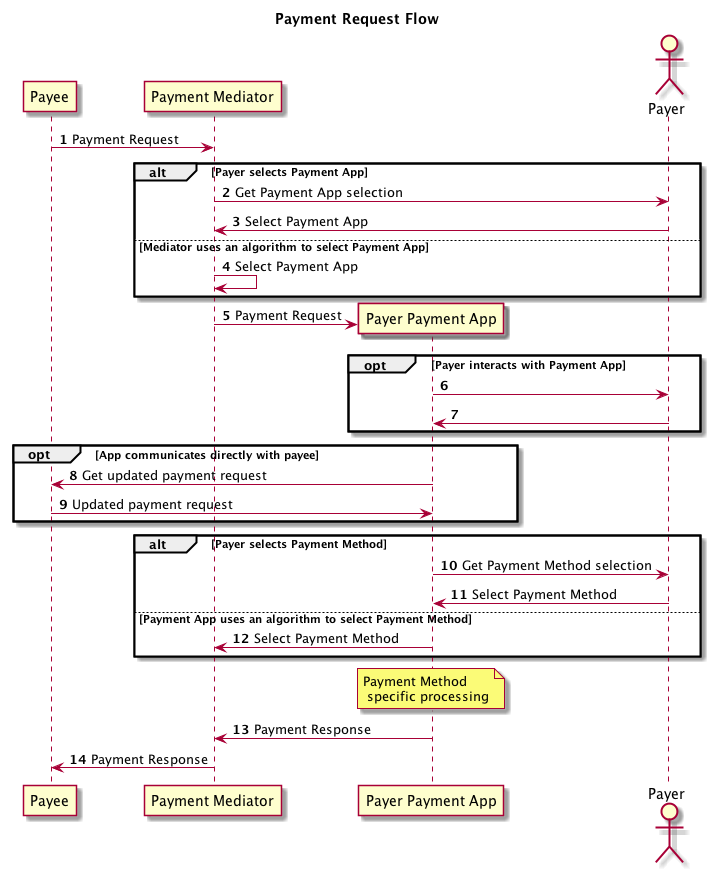

The mission of the Web Payments Working Group is to make payments easier and more secure on the Web.
The group is chartered to develop multiple technologies. This document describes an architecture and a set of roles in that architecture that, together, facilitate the group's mission.
This intentionally describes components by their role, acknowledging that different implementations may result in multiple roles being adopted by a single system component. No specifics are defined about how the functions of each role will be fulfilled beyond the internal algorithms that each must execute. Specific interfaces may be described in detail in accompanying documents that define how these roles are implemented in those contexts.
This architecture is focused on the interactions between a payer and payee on the Web and does not cover the architecture or components required for the full end to end payment process.
The working group maintains a list of all bug reports that the group has not yet addressed. This draft highlights some of the pending issues that are still to be discussed in the working group. No decision has been taken on the outcome of these issues including whether they are valid. Pull requests with proposed specification text for outstanding issues are strongly encouraged.
This specification was derived from A Payments Initiation Architecture for the Web.
Payments on the Web today are very payee-centric. The entire payment process is driven by the payee, usually an online merchant, who presents the user with one or more ways to pay. In the majority of cases the user provides a static credential (such as the details of a credit card) back to the merchant or is redirected to a digital wallet service where they approve the transaction.
Unless the user is able to find a digital wallet that is supported by all of the payee's they wish to pay they will never have a standardized payment experience and the majority of the time that experience is driven by the payee.
Further, there is no standardized mechanism to establish a bi-directional channel of communication between the payer (or their service provider) and the payee (or their service provider) which could be used to exchange payment details and credentials in a more secure manner or negotiate the use of an entirely new payment method.
To remedy this one-sided situation this architecture proposes a new standardized component, the payment app, that is used by the payer to handle payment requests.
Facilitating an autonomous process for matching the payment methods that the payer supports with those that the payee supports seems trivial on the surface, however it is also important to ensure that the architecture doesn't allow for user data to be leaked to the payee system.
To protect the payer's privacy the architecture defines the role of a payment mediator that sits between the payer and payee mediating the initial handshake between them and connecting the requesting payee system with an appropriate payer payment app.
In this document we use the following terms with the implied definition as stated below:
This specification defines two classes of products:
A payment app MUST behave as described in this specification in order to be considered conformant. In this specification, payment app means a software component that exercises the role of a payment app as described in the section Roles.
An informative summary of the required capabilities of a payment app are:
Payment apps MAY implement algorithms given in this specification in any way desired, so long as the end result is indistinguishable from the result that would be obtained by the specification's algorithms.
A payment mediator MUST behave as described in this specification in order to be considered conformant. In this specification, payment mediator means a software component that exercises the role of a payment mediator as described in the section Roles.
A summary of the required capabilities of a payment mediator are:
Payment mediators MAY implement algorithms given in this specification in any way desired, so long as the end result is indistinguishable from the result that would be obtained by the specification's algorithms.
The flow of a payment request is shown in the diagram below:
In this flow, any system or system component playing the role of payment app or payment mediator is assumed to be controlled by the payer. The payment request originates from the payee and is always processed first by a payment mediator.
It's quite possible that a single component may fulfil both roles or even that the system only supports a single payment app, which is always used by default, and therefor the role of the payment mediator is reduced to simply proxying the request and response between the payee system and the payment app.
Each payment app will support one or more payment methods. A payment method is a system and set of rules for processing a payment request. This architecture is designed to support the broadest possible array of payment methods. When a payee accepts a given payment method, the assumption is that the payee will know how to process the payment method data returned by the payment app for that payment method.
Each payment method is identified by a payment method identifier. The payment mediator compares payment method identifiers in the payment request to those, known to be enabled in the available payment apps to determine which payment apps to offer the payer to use to process the payment request.
Payment method identifiers support distributed extensibility, meaning that there is not a central machine-readable registry to discover or register payment methods. Rather, any person or entity can define a new payment method as long as they publish a payment method specification that defines:
The following are the key roles within this architecture.
A payment app is a component able to process a payment request and return a payment response. Banks, merchants, mobile operators, and anyone else who wants to, will make these available. User agents are also likely to take on the role of a payment app, storing payment related information on behalf of the user, as they already do today with passwords, and using this to process certain payment requests. It is expected that payment apps will increase security and privacy by giving users more control over what they share over the network. Payment apps will distinguish themselves through the features and services they provide beyond the required capabilities described here, for example by offering strong user authentication, loyalty program integration, back-channel communications with the merchant for fraud analytics, and so on.
Payment apps should be implementable on desktops, mobile devices, televisions, embedded devices and other devices and operating systems. Payment apps may even be implemented in contexts where they do not have direct access to the Web since they payment app receives payment requests from the payment mediator.
As part of processing a payment request, a payment app MAY render a user interface and/or take advantage of one or more other IO channels for payer or third-party interaction (e.g., with a payment service provider). In some cases, and where supported by a payment method, a payment app may be able to facilitate a payment without immediate user interaction based on prior payer consent. (Example: A Web of Things scenario where the payer is a machine capable of executing payments in accordance with predefined rules and logic).
The composition of a payment app will be platform and deployment dependent and many aspects of how the payment app communicates with the host platform, interacts with the payer and payee, and communicates with third-party services will be determined by the implementer who provides the execution environment for the app, the channels supported by the chosen payment method and the capabilities of the payment mediator, that mediates interactions between the payment app and the payee.
Payment apps support one or more payment methods. Support for a payment method implies that the app SHOULD be able to process a payment request that conforms to the rules defined in the payment method specification for that payment method and SHOULD be able to return a valid payment response.
However, sometimes an app will be designed to support a specific payment method but the app will not have been configured to process payments using that payment method. This may be due to some payment method data that the payer needs to configure such as a user credential or payment instrument details. In that case the payment app is said to support the payment method but that payment method is not enabled.
For example, a payment app may be capable of processing a basic credit card payment that simply returns the card details in the payment response. Unless the user has configured the payment app with the card details or is able to provide these at the time of processing, that method is not enabled.
If a payment app defines a payment method as enabled then it MUST be able to process any
payment request that lists that that payment method as supported and is formatted correctly according
to the payment method specification for that payment method.
Payment mediators should only consider enabled payment methods when evaluating if a
payment app is appropriate to process a given payment request.
The following algorithms must be implemented by all conforming payment apps:
The most important capability of a payment app is it's ability to process a payment request and return a valid payment response.
The steps for processing a payment request are given by the following algorithm. The algorithm takes a valid payment request (request) as input and returns a valid payment response (response).
In order for a payment mediator to know if it should consider passing a payment request to a payment app it must know which payment methods are enabled in that app.
The payment app MUST provide a mechanism for external components to get a list of enabled payment methods. The return value MUST be a set of unique payment method identifiers and the payment app MUST be capable of performing payment method specific processing for all payment methods identified by the identifiers in that set.
The following extension points are defined for implementation specific processing.
A payment app should implement a mechanism for selecting a payment method which takes as input a list of payment method identifiers and returns a single payment method identifier. This mechanism MAY include user input, selection based on a custom algorithm or even configured defaults.
A payment app that claims to have a particular payment method enabled must provide a mechanism for performing payment method specific processing for that payment method.
The input to this process will be a complete payment request and the payment method identifier of the payment method that should be used to process the request. The payment app SHOULD expect the request to contain any payment method data required to complete the processing of the request.
The specific behaviour of the payment app during this processing MAY include user interaction or communication with other systems or components. This will be defined, either explicitly or implicitly, in the appropriate payment method specification. The payment app MUST return a payment response that contains the appropriate payment method data for the payment method identified by the payment method identifier passed as input to the process.
The payment mediator sits between the payee's system and the payer's payment app(s) and performs a number of functions:
The following algorithms must be implemented by all conforming payment mediators:
A payment mediator, upon receiving a payment request must compare the set of payment methods supported by the payee (as defined in the payment request) with the set of payment methods enabled in all available payment apps to which it has access and produce a list of payment apps that should be capable of processing the request.
The steps for getting a list of capable payment apps are given by the following algorithm. The algorithm takes a valid payment request (request) and the set of payment apps to which it is able to pass the payment request (apps) as input and returns a set of payment method identifiers.
The following extension points are defined for implementation specific processing.
Once the mediator has determined the set of payment apps that are able to process the payment request it must select one and pass the request to it.
The steps for selecting a payment app are implementation specific and MAY involve user interaction with the payer or may involve an algorithm that uses defaults and configuration data to make the selection.
The input to this process is an ordered list of payment apps and the output is a single payment app.
The payment mediator must have some mechanism of passing the payment request to the payment app that was selected following the steps for selecting a payment app.
The payment request MUST not be altered by the payment mediator.